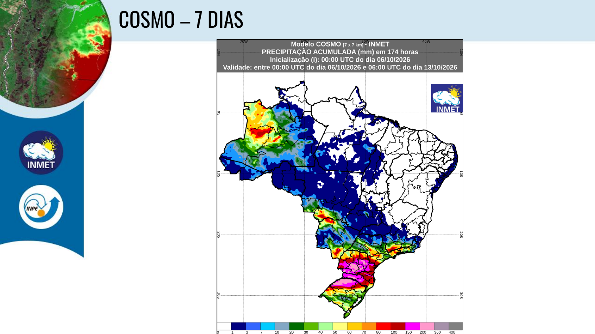
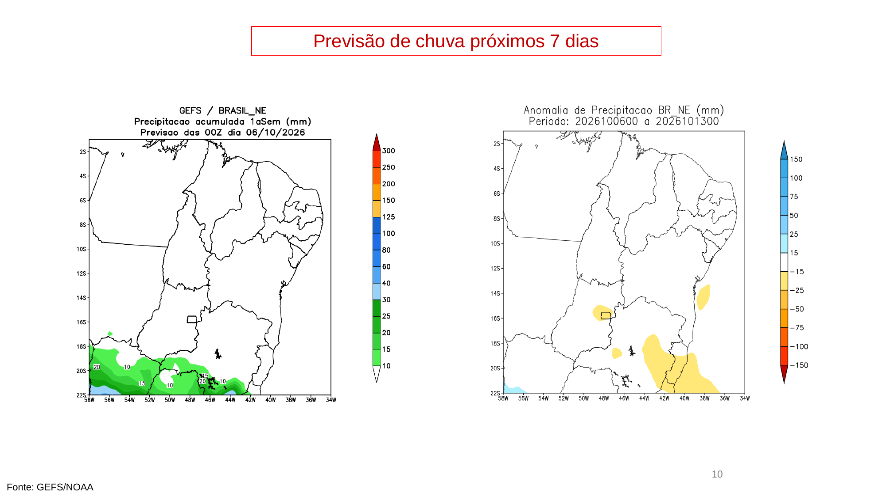
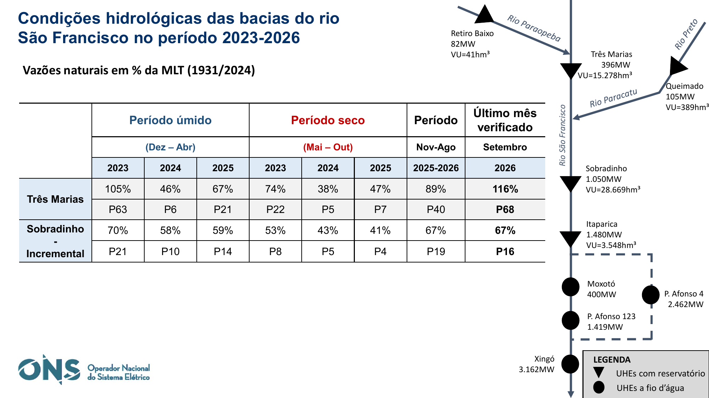

| Data da reunião | 06 de outubro de 2026 |
| Próxima reunião | 03 de novembro de 2026 |
| Verticais | INMET/INPE, CEMADEN e ONS |
| Objetivo | Consolidar a leitura da entrada do período chuvoso 2026/2027, avaliar a resposta hidrológica e os estoques dos principais reservatórios e registrar temas operacionais discutidos na reunião. |
| Supervisão técnica | José Aguiar de Lima Jr. - Especialista em Geoprocessamento - SOE/ANA - Gabinete |
| Elaboração | Com suporte de IA e revisão técnica humana. |
1. Contexto e conclusão central; 2. Vertical INMET/INPE; 3. Vertical CEMADEN; 4. Vertical ONS; 5. Análise integrada; 6. Debate sobre oscilações intradiárias e usos múltiplos; 7. Comunicação e governança institucional; 8. Cenários e pontos de controle até 03/11; 9. Conclusões e encaminhamentos; Anexo A - Quadro de indicadores; Anexo B - Fontes.
Conclusão: a bacia ingressa no período chuvoso 2026/2027 com sinais meteorológicos de transição e chuva recente mais favorável nas áreas de montante, mas sem recuperação hidrológica sustentada em toda a bacia. Três Marias mostra melhora relativa mais clara que Sobradinho, enquanto os estoques permanecem relevantes, porém em deplecionamento.
O CEMADEN registra, para Três Marias, precipitação equivalente a 105% da MLT na estação seca de 2026, 179% da MLT em setembro e 315% da MLT parcial nos quatro primeiros dias de outubro. Em 04/10, entretanto, a vazão observada era de 165 m³/s, 73% da MLT, evidenciando a defasagem entre precipitação e resposta hidrológica.
O ONS informou para setembro vazão natural de 116% da MLT em Três Marias e 67% da MLT para a incremental de Sobradinho. Em 04/10, os volumes úteis eram 78,6% em Três Marias e 64,7% em Sobradinho. As previsões de vazão permaneciam abaixo da climatologia no horizonte operativo apresentado, reforçando a necessidade de confirmar a persistência das chuvas ao longo de outubro.
No debate, foi destacado um tema não plenamente capturado pelas médias diárias: oscilações intradiárias de nível a jusante associadas à modulação da operação hidrelétrica, percebidas por usuários locais e relatadas como mais acentuadas em determinados períodos, inclusive fins de semana. Foi mencionada a possibilidade de avaliar tecnicamente uma limitação de variação da ordem de 300 m³/s. A Sala, contudo, não é instância de definição de nova regra; o tema deve ser tratado como avaliação de viabilidade e, se houver mérito, encaminhado pelas vias institucionais competentes da PNRH/SINGREH.
A 10ª Reunião ocorre no início de outubro, quando a bacia passa da estação seca para a instalação progressiva da estação chuvosa. Para fins meteorológicos e hidrológicos, outubro deve ser entendido como mês de transição; o ONS, em sua estatística operacional, utiliza a convenção de período úmido entre dezembro e abril e período seco entre maio e outubro. As duas classificações não são contraditórias: representam recortes distintos para climatologia e operação.
O quadro observado combina três sinais: (i) atmosfera mais favorável à retomada das chuvas; (ii) resposta hidrológica inicial e desigual, mais evidente no Alto São Francisco; e (iii) reservatórios ainda com estoques importantes, mas submetidos a defluências superiores às afluências em parte do período.
| Indicador | 01/09/2026 | 06/10/2026 | Leitura |
|---|---|---|---|
| Três Marias - volume útil | 86,7% em 30/08 | 78,6% em 04/10 | Redução de 8,1 p.p.; estoque ainda relevante. |
| Sobradinho - volume útil | 72,1% em 30/08 | 64,7% em 04/10 | Redução de 7,4 p.p.; atenção à propagação das contribuições de montante. |
| Três Marias - setembro | Previsão ainda restritiva | 116% da MLT verificado | Melhora relativa no último mês observado. |
| Sobradinho incremental - setembro | Condição abaixo da MLT | 67% da MLT | Resposta ainda limitada a jusante. |
| TSI de curto prazo | Seca fraca em Três Marias e Sobradinho em agosto | Três Marias normal; Sobradinho em seca hidrológica moderada em setembro | Assimetria entre cabeceira e reservatório de jusante. |
A vertical do INMET/INPE foi utilizada para caracterizar a transição atmosférica de outubro e a distribuição espacial prevista da precipitação. O ponto decisório não é a ocorrência de um episódio isolado, mas a recorrência e persistência das chuvas sobre as áreas formadoras de vazão do Alto e Médio São Francisco.

A leitura para outubro permanece de transição. Assim, a melhora meteorológica deve ser confirmada por sequências de eventos capazes de recompor umidade antecedente e produzir resposta hidrológica. A eventual influência do El Niño deve ser tratada como condicionante probabilístico, sem pressupor comportamento uniforme em toda a bacia.
O CEMADEN quantifica os primeiros sinais da transição. A estação chuvosa 2025/2026 encerrou com 1.104 mm, 92% da MLT; a estação seca de abril a setembro de 2026 acumulou 184 mm, 105% da MLT. Setembro registrou 83 mm, 179% da MLT, e outubro somava 41 mm até 04/10, correspondendo a 315% da MLT parcial apresentada.
Na vazão, a estação seca de 2026 ficou próxima da climatologia, com média de 314 m³/s, 98% da MLT. Setembro alcançou 237 m³/s, 132% da MLT; em 04/10, entretanto, a vazão era 165 m³/s, 73% da MLT. O comportamento reforça que a precipitação recente ainda não se converteu em recuperação sustentada.

No TSI de longo prazo, setembro aparece em condição normal para Três Marias e Sobradinho. No TSI de curto prazo, Três Marias migra para condição normal, enquanto Sobradinho permanece em condição mais desfavorável, classificada no material como seca hidrológica moderada. Essa diferença é coerente com a recuperação mais rápida das cabeceiras e a resposta ainda limitada do sistema de jusante.
Para 05-18/10, o PDM/CEMADEN apresenta vazão média de 291 m³/s em Três Marias. O slide expressa o valor como 129% da MLT de setembro, embora o horizonte previsto já esteja em outubro; portanto, esse percentual deve ser interpretado com cautela e não comparado diretamente com percentuais mensais de outros horizontes.
As previsões de 14 dias indicam acumulados médios mais elevados em Três Marias do que para a bacia como um todo e Sobradinho, reforçando a importância das cabeceiras para a primeira resposta do sistema. Os produtos subsazonais e sazonais devem ser usados como cenários de acompanhamento, e não como valores determinísticos.
O ONS mostra uma melhora relativa em Três Marias e uma resposta ainda restritiva em Sobradinho. Em setembro, Três Marias registrou vazão natural equivalente a 116% da MLT, enquanto a incremental de Sobradinho ficou em 67% da MLT.

Em 04/10, Três Marias apresentava 78,6% de volume útil, afluência próxima de 190 m³/s e defluência em torno de 676 m³/s. Sobradinho registrava 64,7% de volume útil, afluência de aproximadamente 797 m³/s e defluência de 1.322 m³/s.
Nos cenários de previsão apresentados, Três Marias permanece entre 131 e 169 m³/s no horizonte médio do produto, equivalente a cerca de 31% a 39% da MLT de referência exibida. Para Sobradinho, os cenários situam-se entre 441 e 470 m³/s, 43% a 45% da MLT. Essas previsões possuem janela temporal distinta do PDM/CEMADEN e não devem ser comparadas como se fossem produtos equivalentes.
Nas premissas operativas, o ONS apresentou para Três Marias defluências de 540 m³/s em outubro e 400 m³/s em novembro. Para Sobradinho, 1.400 m³/s em outubro e 1.510 m³/s em novembro; Xingó permanece em 1.360 m³/s nos dois meses. As premissas são apresentadas no contexto de atendimento às condições vigentes e preservação dos recursos armazenados.
As perspectivas de armazenamento indicam continuidade do deplecionamento caso as afluências permaneçam restritivas: Três Marias chega ao início de dezembro em faixa aproximada de 66,3% a 67,5% do volume útil; Sobradinho, entre 52,6% e 53,1%.
As três verticais convergem para uma interpretação de transição, com defasagem entre o sinal meteorológico e a resposta do sistema. A sequência analítica é: chuva -> recomposição da umidade antecedente -> aumento das vazões -> redução do deplecionamento -> recuperação de armazenamento. Em 06/10, apenas os primeiros elos dessa sequência apresentam sinal favorável consistente.
| Vertical | Sinal principal | Implicação |
|---|---|---|
| INMET/INPE | Transição para maior ocorrência de chuva. | Acompanhar recorrência, não apenas acumulados isolados. |
| CEMADEN | Chuva recente e melhora nas cabeceiras; resposta desigual. | Verificar se Três Marias consolida recuperação e se o sinal se propaga. |
| ONS | Estoques relevantes, porém afluências projetadas ainda restritivas. | Manter prudência operativa e acompanhar deplecionamento. |
Um cuidado metodológico é essencial: os números de CEMADEN e ONS utilizam modelos, períodos e referências climatológicas diferentes. A previsão PDM de 291 m³/s para 05-18/10 não contradiz, por si só, a faixa inferior apresentada pelo ONS para horizonte mais longo. O que deve ser comparado é a direção do sinal e a evolução observada nas atualizações subsequentes.
Durante o debate foi destacada a ocorrência de variações expressivas de nível ao longo do mesmo dia, descritas de forma ilustrativa como um efeito de "máquina de lavar". Também foi relatada percepção de redução mais acentuada em determinados fins de semana. A hipótese discutida é de associação, ao menos parcial, com a modulação intradiária da geração e com alterações nas vazões turbinadas/defluentes.
Foi informado no debate que as regras operativas vigentes estão sendo cumpridas. Ainda assim, conformidade com valores médios ou mínimos diários não é equivalente à ausência de repercussão local. Para pescadores, ribeirinhos e captações por bombeamento, a variável crítica pode ser a cota mínima atingida, a duração do nível baixo e a velocidade da variação.
Em termos de comunicação, o usuário local não experimenta a "vazão média diária"; ele experimenta o hidrograma real. Uma captação pode perder submergência por algumas horas mesmo que a média diária permaneça aderente à regra. Da mesma forma, oscilações rápidas podem afetar acesso às margens, condições de pesca e navegação local.
Foi apresentada, para discussão de viabilidade, a possibilidade de que a variação operacional não ultrapasse aproximadamente 300 m³/s. Esse valor não foi definido pela Sala como regra. Para avaliação técnica, é indispensável explicitar o intervalo temporal associado ao limite - por hora, por manobra, entre patamares ou como amplitude intradiária - e relacioná-lo à variação de cota nos trechos potencialmente afetados.
Um mesmo incremento de 300 m³/s pode produzir respostas de nível distintas conforme geometria do canal, vazão de base, distância da usina, tempo de propagação e condições locais. A análise deve, portanto, combinar vazão e cota.
A comunicação sobre oscilações relevantes não deve ser atribuída exclusivamente à SOE/ANA. Trata-se de tema compartilhado entre o operador dos aproveitamentos - AXIA, ex-CHESF -, o ONS, a ANA e, conforme o território, os atores locais responsáveis pela interlocução com os usuários.
Para a população afetada, a mensagem deve privilegiar grandezas diretamente percebidas: cota, amplitude esperada, horário provável de subida/descida e duração. A vazão em m³/s deve permanecer disponível como informação técnica, mas acompanhada de tradução operacional para o trecho do rio.
Em vez de comunicar apenas "defluência média de X m³/s", um produto orientado ao usuário deveria responder: até onde o nível pode baixar, em que horário, por quanto tempo e quando será atualizada a previsão. Canais redundantes - página web, boletim, listas institucionais, Defesas Civis, municípios e organizações locais - aumentam a efetividade.
A Sala de Acompanhamento é espaço de monitoramento, articulação e avaliação técnica. Não cabe à reunião instituir nova regra operacional. A possibilidade de limitar variações, inclusive a referência de 300 m³/s discutida, deve ser registrada como alternativa para avaliação de viabilidade.
Havendo mérito técnico e institucional, o tema deve ser formalizado pelos procedimentos próprios da Política Nacional de Recursos Hídricos e do SINGREH, com participação dos agentes competentes, Comitê de Bacia e ANA, podendo alcançar o CNRH quando a matéria assim exigir.
| Cenário | Caracterização | Indicadores de confirmação | Resposta |
|---|---|---|---|
| 1 - Instalação favorável do período chuvoso | Chuvas recorrentes no Alto São Francisco e progressão para o Médio. | Aumento sustentado de afluências; redução da diferença entre afluência e defluência; estabilização do armazenamento. | Reavaliar ritmo de deplecionamento e ampliar horizonte de recuperação. |
| 2 - Chuva irregular | Eventos episódicos sem continuidade suficiente. | Vazões permanecem abaixo da MLT; armazenamento continua caindo. | Manter prudência e reforçar cenários de preservação. |
| 3 - Recuperação concentrada em Três Marias | Cabeceiras reagem, mas Sobradinho permanece restritivo. | Melhora em Três Marias sem resposta proporcional na incremental de Sobradinho. | Acompanhar propagação e tempos de viagem. |
| 4 - Oscilação intradiária relevante | Médias diárias aderentes, porém grandes amplitudes horárias de cota/vazão. | Séries de alta frequência mostram rampas sistemáticas e associação com operação. | Avaliar impactos, comunicação e eventual instrução de proposta formal. |
| Instituição / indicador | Valor / período | Observação |
|---|---|---|
| CEMADEN - precipitação estação chuvosa | 1.104 mm - 92% MLT | Out/2025 a Mar/2026. |
| CEMADEN - precipitação estação seca 2026 | 184 mm - 105% MLT | Abr-Set/2026. |
| CEMADEN - setembro | 83 mm - 179% MLT | Precipitação. |
| CEMADEN - outubro parcial | 41 mm - 315% MLT parcial | Até 04/10; percentual conforme apresentação. |
| CEMADEN - vazão 04/10 em Três Marias | 165 m³/s - 73% MLT | Resposta ainda restritiva. |
| CEMADEN - PDM Três Marias | 291 m³/s | Média prevista 05-18/10; 129% da MLT de setembro no slide. |
| ONS - Três Marias setembro | 116% MLT | Vazão natural verificada. |
| ONS - Sobradinho incremental setembro | 67% MLT | Vazão natural incremental. |
| ONS - VU Três Marias | 78,6% | 04/10. |
| ONS - VU Sobradinho | 64,7% | 04/10. |
| ONS - previsão Três Marias | 131-169 m³/s - 31%-39% MLT | Horizonte do produto apresentado pelo ONS. |
| ONS - previsão Sobradinho | 441-470 m³/s - 43%-45% MLT | Horizonte do produto apresentado pelo ONS. |
| ONS - defluência Três Marias | 540 m³/s Out; 400 m³/s Nov | Premissas operativas. |
| ONS - defluência Sobradinho | 1.400 m³/s Out; 1.510 m³/s Nov | Premissas operativas. |
| Debate - oscilação intradiária | Referência de até 300 m³/s | Possibilidade a avaliar; não constitui regra ou decisão da Sala. |
INMET/INPE. Condições observadas e produtos de previsão para a bacia do rio São Francisco. 10ª Reunião em 2026, 06/10/2026.
CEMADEN. Monitoramento, Previsões e Projeções para a Bacia do Rio São Francisco. 06/10/2026.
ONS. Avaliação das Condições Hidrológicas e de Armazenamento na Bacia do Rio São Francisco. 10ª Reunião em 2026, 06/10/2026.
ANA - apresentações oficiais:
https://www.gov.br/ana/pt-br/assuntos/monitoramento-e-eventos-criticos/eventos-criticos/apresentacoes-das-reunioes/apresentacoes-das-reunioes
Gravação da reunião:
https://www.youtube.com/live/X9Qo3RorRvk
Boletim diário - São Francisco:
https://www.gov.br/ana/pt-br/sala-de-situacao/sao-francisco/sao-francisco-boletim-diario